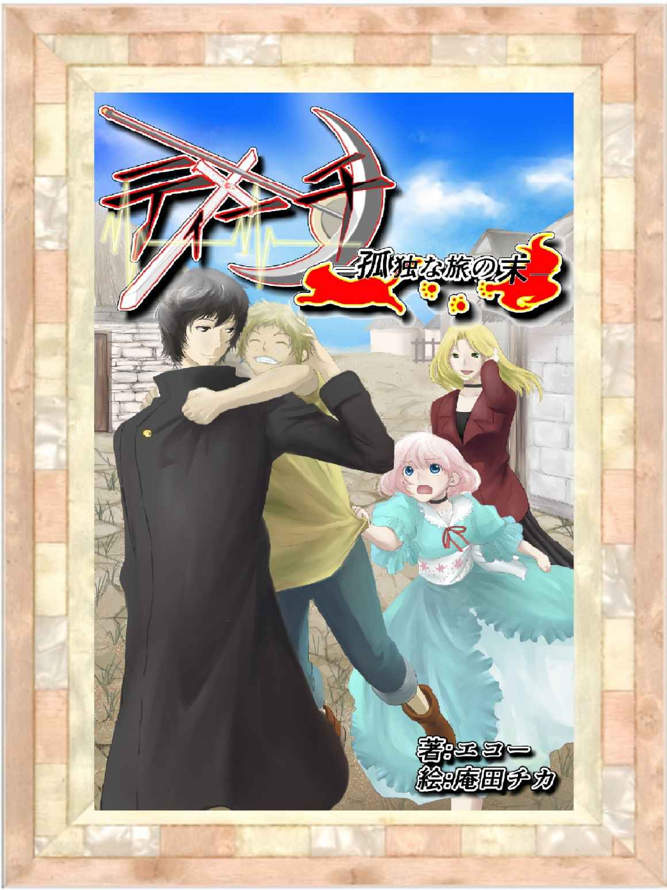
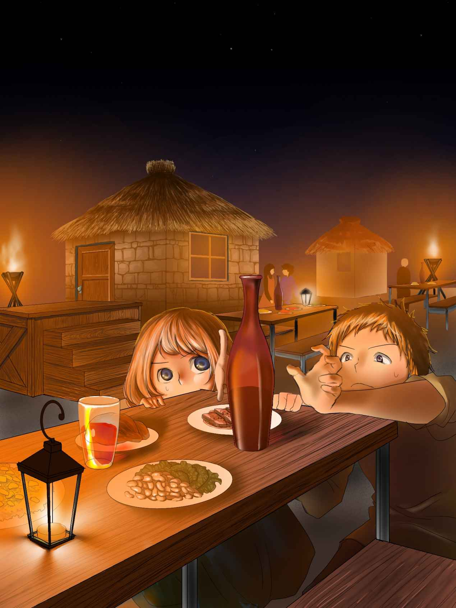
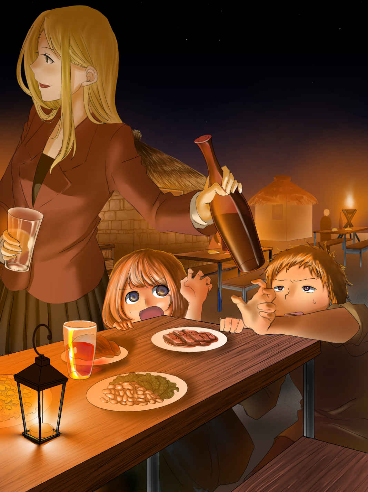
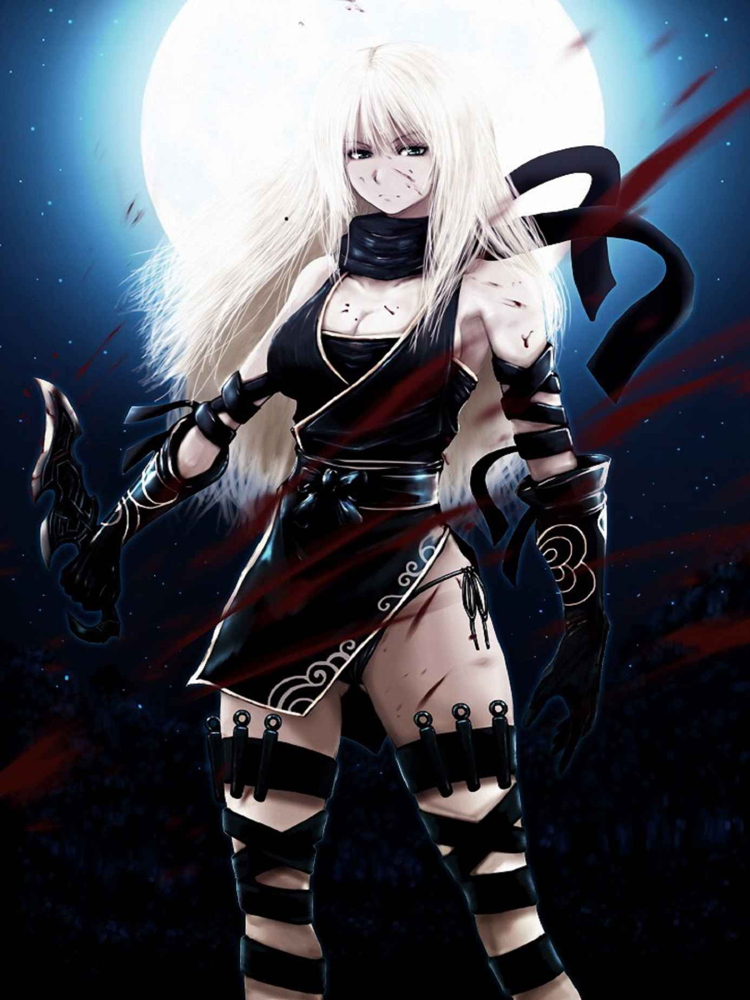
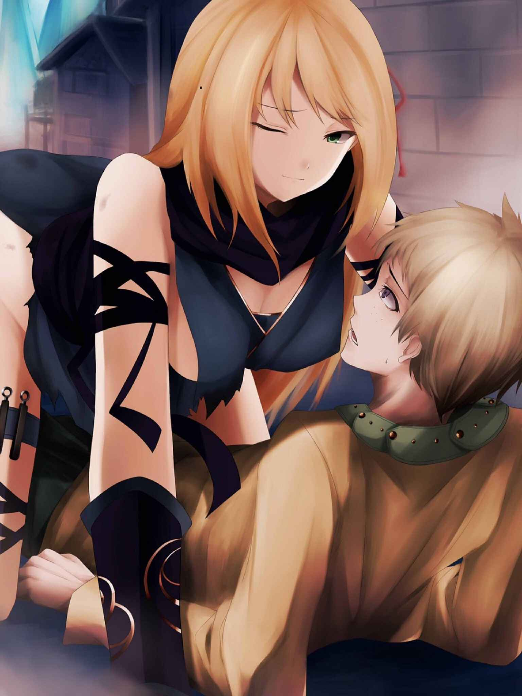
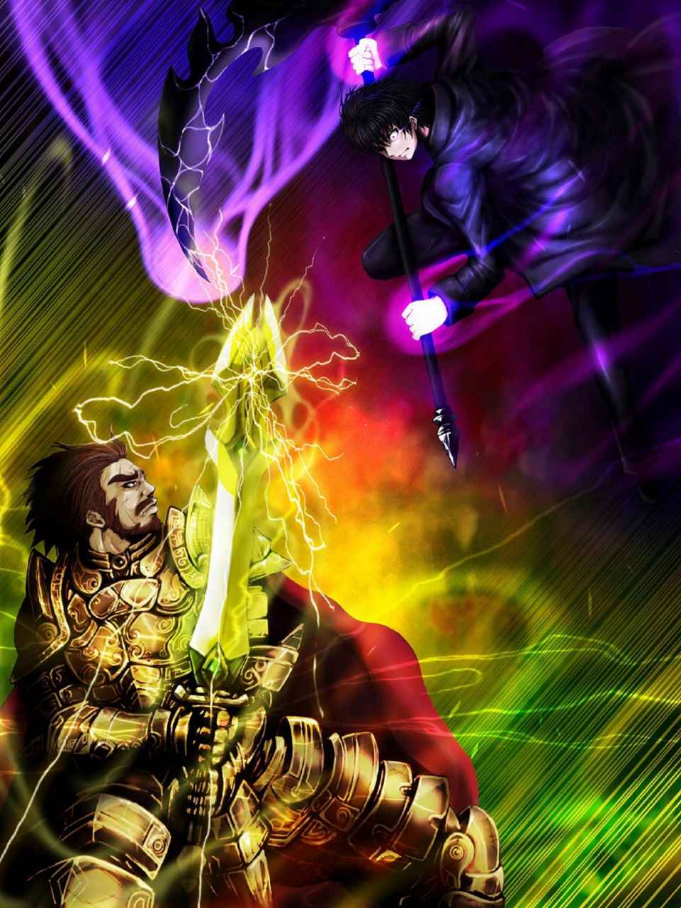
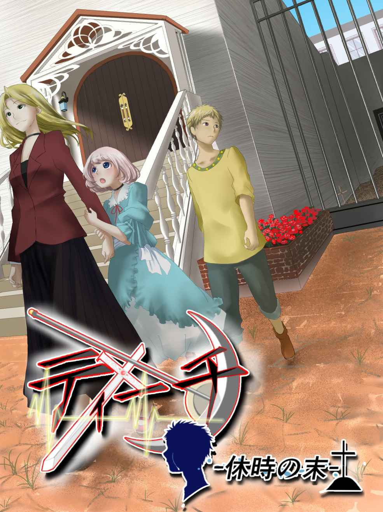
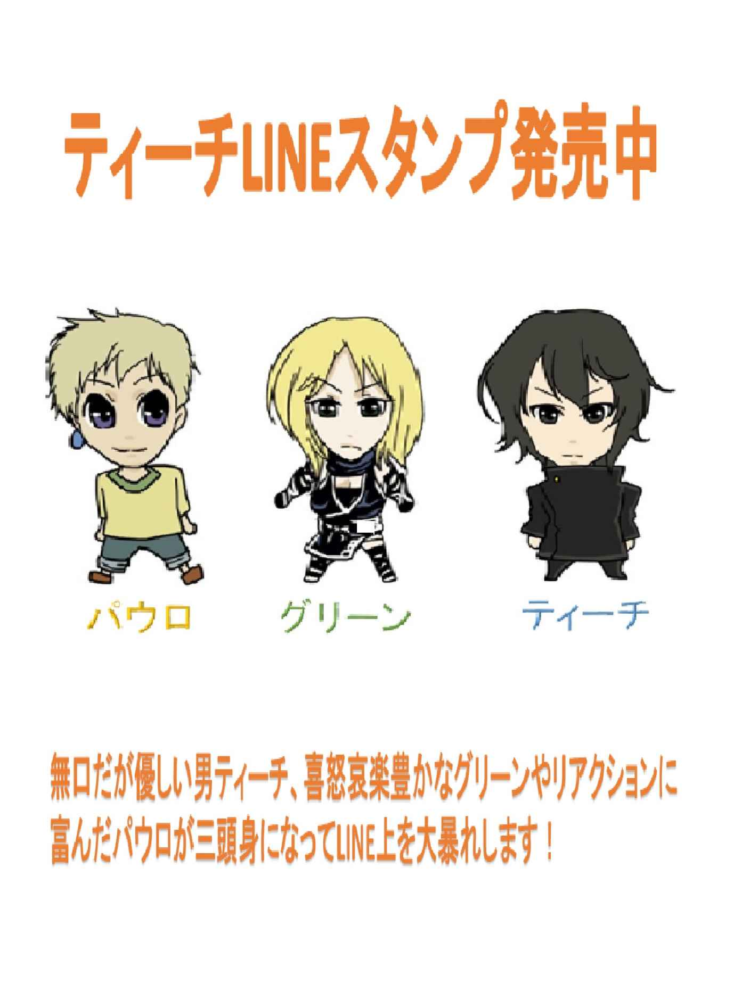

| ティーチ①: 孤独な旅の末 | |
| エコー | |
| (2015) | |

国王の絶対的な支持と魔法の力で栄えた旧王国ホライズン。この国が滅ぶ姿を想像した者は当時１人としていなかったという。残された断片的な文献を集め、学者達はその事件の全貌を発表した。
事の発端は百と数十年前に起きた未曾有の大災害より始まる。国の半分が海に沈み、残された大地は腐臭と疫病に満ちていった。日に日に増える難民と国への不満は限界をむかえ、国王はとある決断を迫られていた。
～教育者狩り～
教育者の家系の属す者、その友好関係にある者には大災害の人為的な計画を行った疑いが有り、処罰、処刑の権利を万人に与える。
当時、王と支持を二分する敬意の対象とされた存在が彼ら教育者の家系の者達であった。
ホライズンにて一般に起用される魔法の類は概ね教育者なる集団から学ぶ事が常識となっていた。それというのも、魔法と各分野の学問には深い結びつきがあり、社会科学が得意なものには風を操る魔法、理化学には土の魔法という様に学問から適正をはかり、それぞれの分野の教育者から教えを請うのが当然の習慣であったからだ。
しかし、大災害によって国が力を失いつつある中、生活の安定の為、より強力な魔法を求める民が増えたことから教育者の支持はより力をつけていき、それに反比例する様にして国王の支持は日を追う毎に失われていった。そして、国と教育者の失われた力の拮抗は更なる悲劇を引き起こす。
教育者による政治の介入防止と国王の尊厳の維持･･････そういった名目から国は偽りの情報をホライズン全土に報告した。これが教育者狩りの条例である。
偽りの情報は想定以上の速さで国に浸透した。災害後、実質的に支持を集めていた教育者達の状況が説得力を肥大させ、災害による不満の捌け口としての思想が情報の真否を問う思想を圧倒してしまったのだ。災厄より10
年の後、教育者は国を追われ、その姿を見る事も無くなる。教育者の名を口にするものはなく、未だ教育者狩りの条例は撤廃されずにいる。それは復讐に恐怖した国民の総意でもあった。
文献を追っての歴史はここから酷く曖昧になる。しかし、私が集めた情報から推測するに恐らくホライズンの滅亡は以後数年の出来事であり、原因は以下のものと想像出来る。
原因１．災害による影響
原因２．教育者とともに魔法の力を失った事による生活苦
原因３．人を迫害した事により国民同士に起きた不信感、国政の悪化
「ふぅ･･････書いていて気味のいい話ではないな。まぁ･･････災害の傷も多くが癒えた今でも教育者に関するタブーはいくつも残っているんだから、ただの歴史として片付けられる事でもない･･････かぁ」
男はペンを置くと自嘲気味に笑った。そして、もし教育者に生き残りがいたらと心境を考え、更に深いため息をついた。
「そりゃあ･･････怨むよなぁ」
生きている･･････その場合、恐らく問題は解決してはいないのだ。今となっては災害の影響もないとはいえ、差別だけは残っているのだから。
「迫害した者の恐れが新たな悲劇の扉を開いた･･････か。不幸にもその被害者はどちらも彼ら教育者達だったという事だな」
もっとも、多重の被害、迫害によって滅んだ民族やそれらの存在など今に始まった事ではない。新旧史実の中には更に凄惨な悲談も少なくは無い。男はもう一度笑みを作ろうとしたが、今度は作り笑いにもならなかった。
被災より百と数十年、春を迎えた今もまた、一切の変化を起さない荒野。その中心にある田舎町の暮らしは決して楽なものではなかった。作物は僅かしかとれず、通貨は失われた共生の世界がそこにはあった。今日、この町に密かに運びこまれた男性がいた。スラリとした長身を黒衣に包み、身の丈程の大鎌を背負ったこの男こそ教育者の家系の生存者ティーチである。
次に彼が目覚めた時、彼のいた場所は仄暗く窓一つ無い建物の中だった。微かに香るワインの香りからして恐らく酒場の地下といった所だろう。そこまでの考察をすると同時に立てかけてある自分の鎌に手を伸ばした。その時―
「そんな物騒なもんで何をする気だい？」
方言なのか滑舌なのかやや風変わりなイントネーションの声へと振り向くとそこには15
、16
歳だろう幼さを残した顔立ちの男子が大ダルに腰を掛けていた。少年は活発な印象を与える逆立った髪と、その風貌からは不釣合いな大人びた青い宝石の入ったピアスを右耳につけられていた。少年は言葉を続けた。
「オイラの名前はパウロ。慌てなくてもアンタの事を知っているのはこの町じゃああんたを運んだ酒場の主人と町長だけだ。それより、アンタ、その右腕の紋って教印か？」
パウロの声はどこか喧嘩腰で言葉一つとっても尋常でない警戒心が伝わってくる。しかし、不思議と敵意は感じない。
「......そうだ。この紋は教育者狩りから逃れる為に代々受け継がれてきた紋。忌み嫌われる家系の証明だ」
少し考えてからティーチは正直に答えた。この教印こそ非難をうけた教育者達の生存を賭けた切り札であった。
「じゃ......じゃあアンタが【十字架の死神】なのか？」
パウロは怖る怖る聞いたが、ティーチはきっぱりと首を横に振った。
「な、ならいいんだ。この辺りじゃ今、教育者の呪いの噂があってみんな敏感になってんだ。なんでも十字架の死神とか呼ばれてるソイツに関わった奴はみんな背中に十字の傷を負って殺されているそうだ。その時に生き残った奴も、十字の傷は交差部位の縫合が出来ずに、背中から腐って死ぬ。しかも、背後から襲われて正体も不明。呪いの噂もあって死神の正体は教育者の家系の者じゃないかって話しをどこへ行っても聞くよ。まぁ......」
パウロはそういってチラリとティーチを見て悪戯っぽく笑った。
「その大きな鎌をみていると死神ってのはアンタのがお似合いかもしんないけどな」
不安の解けた途端に元気が出てきたパウロは冗談をまじえる。それを機に今度はティーチがパウロに聞いた。
「教育者の家系であることは同じだ。お前は......俺を恐れないのか？」
それを聞くと、よくぞ！とばかりに立ち上がり、パウロは元気に、そして誇らしげに答えた。
「町長が言ったんだ。先代の罪で人を裁くのは変だってさ。それは教育者だって変わんないよ。オイラは町長に拾われたから今生きてられる。だから町長の言う事は何でも信じてるし、尊敬してるんだ」
それを機にパウロの誇らしげな町長の話は次々に続き、それは夜遅くにまでおよんだが、ティーチはその無邪気な語りを最後まで聞いていた。
時計の針が十一時をまわった頃、話し疲れたパウロは樽を背もたれにした姿勢のまま寝いってしまった。そんなパウロにティーチは恐らく自分の為に用意されたのであろう一枚の毛布をかけてやった。丁度その時、地下の入り口から年老いた男と丸太の様に太い腕をした大柄な男が入ってきた。
「お初にお目にかかります。私はこの町をまとめているシルヴァと申します。こちらは酒場の主人をしている......」
「......ゴンスだ」
小太りな男に急かされる様にして大柄な男が答える。
「おや？パウロは眠ってしまいましたか･･････どうやらあなたの事を信用しきっている様ですな」
シルヴァは礼儀正しく頭を下げた後、この顔を見ればあなたの事も信頼できるように思えるとパウロの寝顔を見ながら微笑んだ。
「･･････ティーチだ。倒れているところを助けて頂いた事には感謝している。だが、これ以上俺がここに残れば貴方がたの立場も危なくなる。早朝には町を抜けさせていただく」
ティーチは教育者であり、迫害対象である自分を匿う危険を嫌と言う程知っていただから、それだけを告げると荷造りを始めた。しかし、その手を町長が止める。
「貴方はこれからも旅を続けるつもりですか？パウロの事もありますし、私は貴方を町のみんなに紹介したいと思っているのです。一つ、私の案に乗ってはいただけませんか？」
ティーチは暫くの沈黙の後、パウロの顔を見て暫く考えるとシルヴァに言った。
「話しを聞こう」
翌朝、シルヴァの案を受け入れたティーチは町の北にある廃村を目指していた。彼の話しはこうだった。今尚、差別として教育者への不信の目はあるが、この様な小さな町ならば町長の力添えと何らかの実績があれば町民に受け入れられる事は十分に可能だというのだ。そして現在、町は山賊の被害にさらされていた。ただでさえ実りの少ないこの町にとってこの被害は致命の問題といえるのだが、小さい町だけに力による対抗には勝算も無く、近隣の大国への要請もたかだか山賊の為に兵士を派遣する事は出来ないと拒否され、まさに八方塞りといってよい状況にあった。初めは拒もうとしたティーチだったが、今まで国を転々としてきたティーチには自ら手を差し伸べてくれた町に恩義を感じていた事、そして今向かっている廃村を根城とする山賊が自身に対等に話しかけてくれた数少ない好感の持てる人物、パウロの両親の仇と知り、重い腰を上げたのだった。
廃村に侵入したティーチは物陰に潜みながら敵の戦力を把握した。人数は５人と少なく、武器を持っている様子はない。加えてリーダーと思われる人物が見当たらない事を確認するとティーチは敵地に飛び込んだ。
不意打ちで２人を倒し大鎌を構える。大鎌の巨大な刃がみるみる赤く染まり５人の山賊が息絶えていく......それはまさに一瞬といっていいほどに短時間の出来事であった。しかし次の瞬間、銃声が鳴り響く。咄嗟に体を傾けた事で頬へのかすり傷ですんだティーチが振り返ると十人の山賊と銃を持った親玉と思われる男が彼をとり囲んでいた。
「クク...驚いたか？今ではこうも手入れのされた銃はそうそうお目にできないからな。ま、お披露目はここまでだ。お前に使う弾はもうないぜ」
鈍く輝く銃をなでながら山賊の親玉と思われる男はニタリ笑った。悪趣味に輝く服を着、左耳にはどこかで見覚えのある赤い宝石の入ったピアスをしている。小柄な男だが、先程の狙撃を見るに銃の扱いには手慣れている。彼が手を挙げると待っていたと言わんばかりにティーチを囲んでいた10
人の山賊が刃物を手に襲いかかってきた。ティーチはこれを前方に転がる事で意表をついて避けると、目の前にいた山賊の顔を殴り気絶させた。彼は気絶させた山賊の刃物を奪うと対角線にいた山賊の脚の腱を狙って投げた。足の腱に深々と刺さる刃物に山賊はもんどりうって倒れる。そして声にならない苦痛の表情を浮かべ嗚咽を漏らした。これをきっかけに数に優れる山賊の余裕は消えうせる。倒れてもがく仲間の姿とティーチの血塗られた大鎌に畏怖の念を抱きはじめた山賊は逃げる事も戦う事も忘れ、その場に呆然と立ち尽くしていた。しかし未だ８人の部下を残す親玉はその畏怖を感じる事もなく、部下達に激を飛ばした。
「てめぇら何してやがる？俺の的になりたいのか？」
山賊の親玉の言葉で山賊達は震えながらもティーチに戦意を向けた。
「く......くそぉぉ！」
自らを奮い立たせる様に大声をあげ、４人の山賊が同時にティーチを襲う。それに便乗し、二人の山賊が背後からも奇襲をかけた。しかし、ティーチはまるで背中にも目があるかの様に背後からの攻撃を避ける。すると的を失った山賊は仲間同士でぶつかり一瞬の隙が生じた。ティーチはすかさずこの６人の山賊達を大鎌でなぎ払った。その大量の血によって廃村の荒れ果てた地は赤く染まり、こうして出来た恐ろしい光景にいよいよ腰が抜けた残りの山賊はティーチに背を向けてその場から逃げだしていくが、親玉はこれを止める事が出来なかった。一瞬だが、自分たちに勝機がない事を感じてしまった彼は部下を留める力さえも失ったのだ。しかし、部下が家の角を曲がった所で彼らの悲鳴と鈍器の音、そして人の倒れる音が響いた。恐らく山賊の物であろう血のついた木の棒を持って現れたのは町で出会った少年、パウロだった。
「分かるよ......お前が......オイラの仇だ」
パウロは瞳を涙に滲ませ、震えながらも毅然とした声で言った。無理もないだろう。まだ少年である彼にとって人と戦う事も、聞かされた真実もその全てが酷なものである。だが、戦いは終わってはいなかった。まだ、山賊には親玉が無傷のままで残っているのだ。親玉は考えていた。この場をどうすれば逃げきる事ができるのか･･････残された武器は２つの弾が入った拳銃のみである。彼にとってパウロの出現でティーチの注意がそれている今は唯一無二のチャンスと見えた。意を決してティーチに向けて玉を放つ。しかし、ティーチはこれを簡単に避けてしまう。
「そ......そんな馬鹿な......」
タイミング、距離、常人の反射速度の間に合う弾ではなかった。
「糞が！」
咄嗟に親玉は狙いをパウロに変え、最後の銃弾を発射した。ティーチに勝てないと悟った親玉はパウロを傷つけた隙に逃げる事を考えたのだ。パウロの頭部にめがけて凶弾が迫る。震えるパウロはなす術も無くただただ瞳を大きく見開き、自らに迫る弾を見つめて立ち尽くした。親玉は少年の死を確信し、ティーチの出方を探ろうと向きを変える。しかし、そこにはすでにティーチの姿はなかった。ティーチは銃弾がパウロに向けられるより早く彼に駆け寄り、銃弾がその頭を貫く寸前の所で体を自分に引き寄せた。銃弾はパウロを避け廃村の看板に当たり、看板を空しくキィキィと揺らしただけだった。パウロを助けたティーチが親玉を睨む。
「何故だ？何故お前がそこにいるんだ！」
明らかに間に合わないはずだった。ティーチの距離から考えても、パウロに向けられた銃口をみて助けるのは不可能な距離があった。しかし、彼には分っていたのだ。親玉の思考が......次の動作が予測出来ていたのだ。そして、ティーチは言った。
「教印......この紋は王国時代の教育者が考案した異能を人に与える紋。俺の家系が願った事は決して争い、復讐の為の力ではない。欲っしたのは迫害され続けた生活で失った人を信頼する自信、その為に得た読心【リーディング】の力だ。撃つ場所が分かれば周り込む事など容易い」
ティーチは続けた。
「お前の銃とピアス......１０年前にこの村を襲った時の物だな？パウロ......こいつがお前の本物の仇だ......どうする？」
ティーチはパウロを試すようにそう言うと彼の顔を眺めた。パウロは親玉を睨む。完全に戦意を折られた親玉は少年にさえ脅え、声の一つもでない様子だった。
「オイラもうわかんないよ。だってこいつらは許せない！だけど･･････さっきはじめて人を殴った。全然いいもんじゃなかった。こんな奴の為にもう......嫌な気持ちになんかなりたくも......ないよ......」
パウロはそういうとまた、潤んだ目を強く擦った。
「いい答えだ」
ティーチは短く、それでいて優しくそう言うとパウロの頭をなぜて後は任せろと小さく呟いた。そして親玉に向けて言った。
「お前はあの時、手に入れたその銃の力で周りを黙らせただけ･･････その銃とピアスをパウロに返せ。そして......二度と顔を見せるな！」
ティーチが威圧的にそう言い放つと親玉は言われたとおり、その場に銃とピアスを投げ置き、情けない悲鳴をあげながら逃げて行った。
「もうあいつに悪事を行う余裕は残っていないだろう......お前がいつまでも心を痛める必要はない」
そう言いながらもティーチは目前に迫るパウロの本当の苦悩を見据え、必死に涙を堪えるパウロを見守っていた。
町はいつになく賑わっていた。すでにティーチ達が山賊を退治したという噂が広がり、町長を中心に祭りの準備が始められていたのだ。
「遅いなぁ......グリーンさん。本当に彼らはあの山賊達を懲らしめてくれたのかい？」
グリーンと呼ばれた女性が答える。
「間違いないわ。彼とはちょっとした顔見知りなの......あの程度では怪我ひとつする様な男じゃないわよ。パウロ君も必ず無事に帰ってくるから心配せずに待ちましょう」
そういうと大きな伸びをしながら北の方角を眺めた。長く美しい金色の髪と明るい性格。グリーンはとても華奢な姿をしていたが、素性を知る人間からはＳＳ【サイレント・ストーカー】の名で恐れられる暗殺、尾行の達人であるというもう一つの顔があった。そんな姿を一切匂わせず住民にすっかり溶け込んだグリーンもまたティーチ達の帰りを待っていた。
日が赤く染まり、祭りの準備が終わった頃、彼らは町へと戻ってきた。目を真っ赤にはらして眠るパウロを担いだティーチは町の入り口が見える所まで来ていた。その時、大きな声がした。
「こんの馬鹿！バカティーチ！」
グリーンだった。あまりの大声にパウロは飛び起き、危うくティーチの背中から落ちそうになった......が次の瞬間には本当に振り落とされる事になる。グリーンがティーチの胸倉を掴んで揺すりながら言った。
「アンタね！そんな物騒な鎌に返り血ベッタリ......それでどの面さげて町の人に挨拶する気よ！こいつは私が隠しとくからアンタはその子おぶって町に帰りなさい」
言い終わらない内にグリーンはティーチから鎌を取り上げて町の裏門へと走って行ってしまった。職務の遂行を第一とするグリーンは必ずしもティーチの味方と言える存在ではなかった。しかし、人との接触を極力避けてきた彼の非常識な部分を補う意味では、彼女の社交性と世話焼きな性格は理想的といえた。もっとも......グリーンのせいで地面に叩きつけられたパウロは悶絶しがらティーチに文句を洩らした。
「アレ......なんなの？」
ティーチは無言のまま小さく溜息を溢した。ティーチが町に着くとすぐに町民が彼らを囲んだ。それぞれが感謝の言葉を口にする中
「パウロ！あんたその無鉄砲な性格どうにかならないの!?
」
一人の少女がパウロの耳をひっつかみながら容赦のない小言を放っている。彼女の名前はクー。１２歳という若さだが、そのしっかり者と評判な性格故に年上のパウロよりも随分と大人びた印象をうける。青いドレス風の洋服と快活な性格が不釣り合いなせいか、妙に印象的な少女だ。
(なぁ、ティーチ......女は二人でも、こういう時は姦しいっていうのか？)
「！」
パウロは心の中でティーチに向けて問いかける。ティーチは一瞬驚き、それからクスリと笑った。
「意味としては......な」
二人はニヤリと笑みを見合す。クーにはそれが何か分かるはずもないが、疎外感に腹を立てたクーの小言の対象はパウロに二人分、追加されたのは言うまでもないだろう。
「さぁ、今日はこの村に来てくれたティーチ君、それにグリーンさんの歓迎を兼ねて祭りの準備をしてきた」
「したのは俺達だろー」
「ガハハハッ」
シルヴァのあいさつに口を挟む町の人々とそのやり取りに景気よく笑う酒場の店主。それを咳払い一つで制すとシルヴァは続ける。
「んん！とにかく......です。彼は皆知ってのとおりかつて忌み嫌われた教育者の末裔らしい......」
「それがどーしたぁ」
すでに酒気の入っている若い世代は馬鹿笑いで相槌をいれている。
「こらこら！あまり私の見せ場を取らないでください！」
怒ったところでそれも聞こえてはいないだろう。頭を抱えるシルヴァはもはやパウロ以外誰も聞いていない挨拶を元気なく続けた。
「......とにかく、この町ではそんな事は関係ない。むしろ彼はあの山賊どもを追い払ってくれた英雄だ。今日の歓迎祭をもって十二分、親睦を深めていただきたい」
どうやら、風評を気にしない風土はパウロや町長だけでなく、この町全般に言える雰囲気だった様で、それはティーチにとってこの上なく有難いものだった。祭りはそのままグダグダと始まり、豪華とはいえないまでも大量の食事が目の前に立ち並んだ。大喜びのパウロは恐らくメインディッシュであろう大きな鳥料理にかぶりついた。対してクーはものほしそうな顔でテーブルのグラスを眺めている。
「おい、あれは酒だぜ？」
一瞬ビクリと体を正したクーはそれがパウロの声だと気付いて胸を撫で下ろした。そして、パウロに小声で言った。
「しっ。そうよ。あれが飲めるのは大人だけなのよ？」
「そりゃそうだろ？大人の飲み物なんだから......」
クーはため息を一つ。
「だ・か・らぁ～分からない？あれの味を知っている子供はいないのよ？」
「！」
パウロは頷くとクーと二人、それの置かれているテーブルへと近づく。
「大人の......」
「飲み物......」
しかし、それは目の前まで到着すると同時に、一人の女性の手に取られてしまった。


「あら、これはお酒よ？」
酒瓶を片手にグリーンが言う。
「分かってゴ!?
」
犯行を認めようとしたパウロの脇腹にクーの肘が当たる。
「あ、間違えちゃったみたいです」
「あら、そう？」
「あっ」
「ああぁ」
グリーンは何気ない顔で、その瓶に口を付けると半量程を一気に飲み干してしまった。
「......って、言うか」
そこで初めてクーが気付き、指をさす。
「！え？あの皿って？」
パウロの視界にはグリーンの通路と思わしき空皿の山が形勢されている。これには流石の町民達も唖然となったが、それに気付いたグリーンはわざとらしく頬を赤らめると初めのテーブルで大人しく食事をしていたティーチを振り向いて言った。
「あー......あの、私達っていつ食べれるか分からない生活だったからこんな御馳走を前にするとつい......ね？」
とどめにニコリと笑って誤魔化そうとしたグリーンだが、大人しく木の実のパンをかじっていたティーチがそれを拒否した。
「俺を巻き込むな......」
先に到着し信頼を得ていたグリーンの印象も手伝い、町民達は大いに笑い、ティーチは快く町にむかえ入れられた。
祭りも静まり夜もふけた頃、ティーチは町の外へグリーンを呼び出していた。
「今日はどうしたの？デートのお誘いって訳でも無いでしょう？」
からかう様にグリーンは言った。
「狙いは誰だ？」
ティーチの言葉を予想していたかのようにグリーンは言った。
「あなたなら読めるでしょ？どうやら今回は協力出来そうね」
グリーンは町民に見せた笑みとは違った、どこか哀しみを帯びた笑顔を彼に向けた。ティーチはしばらく考えた後に付け加えた。
「一つ......頼みがある」
夜が明け、翌日からティーチは町の若者と交じり力仕事をこなした。ティーチの体力は町の若者の十数倍はあり、休憩の時間になっても息一つ乱れる事はなかった。相も変わらず無口な彼だったが、その黙々と作業をこなす真面目さが町での評判をなかなかのものとしていた。すでに感謝祭からは一週間の月日が流れていた。無口でどこか人を寄せ付けない雰囲気を持ったティーチには特別親しい者はパウロをおいていなかったが、それには恐らく彼自身が意図的に避けていた事がたぶんに影響していたのだろう。それでも陽気なパウロにつられて、彼の幼馴染みにあたるクーやグリーンを中心に、ティーチの周りにはいつも人が集まっていた。
その夜、町長のシルヴァが町民を集め酒を振舞った。それは山賊被害に合う前の町の姿だったという。何かにつけて馬鹿騒ぎを行う事は通貨の無い助け合いの町にとって非常に重要な役割を秘めているのだ。歓迎祭程の豪華な食事は無いものの、町民の持ち寄った料理を食べ、酒を飲んで騒いだ。日付をまたぐ頃、食べ物の大半がなくなりあたりの落ち着き始めた事を頃合いにシルヴァが町民に向けて語り始めた。
「みなさん、今まで私たちが毎日の様に脅かされてきた山族の被害が去り一週間になります。この一週間は本当に平和な暮らしが続き、それはこれからも約束されるでしょう。それと......もう一つ、素晴らしいニュースがあります」
そこで、シルヴァはニタリと不気味な笑みを浮かべる。するとそれが合図の様に町の大人達が次々に倒れていった。
「おや？少々飲みすぎましたかねえ？ククク......大丈夫、ただ眠っているだけでしょう」
大人達は次々と眠りにつき、酒を口にしていない子供達と、強力な眠気に襲われているティーチ、シルヴァのみがその場に立っていた。
「もう隠す必要もありませんね......不思議に思いませんでしたか？待ち受けていた山族に......私が教えたのですよ。彼らとは古い付き合いでね。私も随分いい思いをさせていただきました。......と言っても、最近少し傲慢になられて丁度良いしつけになりましたよ」
シルヴァの表情はより醜悪なものへと変わっていく。そして、この話しにもっとも絶望を覚えたのは他でもなくパウロであった。
「嘘だ！そんな......町長はオイラを助けてくれた。孤児として死んでいくしかなかったオイラを育ててくれた......なのにどうして？」
パウロはすがる様に言ったが、シルヴァはこれを簡単に切り捨て、その憎悪をパウロにまで向けた。
「黙れ！役立たずの小僧め。そもそもお前の村を潰したのも私達さ。貴方を生かしておいたのは貴方の家が大富豪の一人息子だったからですよ。何かと役に立つかと思えばこの国には探しても親族一人見つかりはしない。あの時殺しておけばとどんなに後悔した事か」
もっとも信頼していた......父とさえ思っていた最愛の人から語られるあまりにも残酷な事実にパウロはただ呆然と立ち尽くすしかなかった。
「フン......話しがそれて申し訳ありませんね。もうすぐ貴方の処刑に帝国の兵士......それも百と余名からなる討伐軍がやってきます。教育者狩りの条例とは素晴しいものですねぇ。貴方は勿論、それに関わった者全てが処罰の対象になる。これで私は窮屈な町のしがらみから開放され、帝国での地位まで保証されるのです。あぁ......勿論、あなたにはそこのクソガキを殺した罪も背負ってもらいます......ふ......ははは.........だぁあはっはっはっは」
「本当......下衆な男......」
シルヴァの話が終わる間際、その声はシルヴァの背後から聞こえた。そして、それとほぼ同時にシルヴァの首が宙を舞う。首を失い、頭を追いかける様に前に倒れこむシルヴァの後ろから現れたのは、返り血に服を濡らしたグリーンの姿だった。その姿には血塗られた衣服や手に持ったナイフとは対象的に、月光を背になびく金色の髪が、凛とした表情が、言い様の無い美しさを表現していた。

「お芝居に付き合うのはここまでよ。アンタ酒なんて飲めないでしょ？」
そう言ってグリーンはティーチに大鎌を投げつけた。グリーンの暗殺の標的、それはまさにこのシルヴァだったのだ。
「すまない」
短くそういうとティーチはパウロに話しかけた。
「辛い思いをさせたな･･････それでもお前は考えなければいけない。真実から目を背けても何も解決はしない。自分で考えて、これからどうするかを決めるんだ」
まるで自分にも言い聞かせるかの様に厳しく、それでいて優しく彼は言った。パウロはまだ呆然としていたが、その言葉に小さく頷いた様に見えた。
「あなたも損な性格してるわ。まあいいわ･･････サービスで付き合ってあげる。いくらあなたでも討伐軍を一人で相手にするのは厳しいでしょ？」
グリーンは呆れたようにそう言った。ティーチは小さく助かると呟くと、グリーンに町を任せ、町の正門から東へと走った。
数分の後に少年は立ち上がった。心の整理を付けるには時間が圧倒的に足りなかった。一週間前に両親が他界している事を知り、今まさに育ての親であり最愛の人であったシルヴァの醜悪な心根と最期を眼前とした。それはまだ幼さを残すパウロにとってはあまりにも大きな試練と言えた。しかし、今はこの悲劇に浸っている事さえ許されはしなかった。町の大人達全員が眠りについている今、町の全てを敵とみなすだろう討伐軍を対処できるのは先程町を出たティーチとすでに防衛の準備にとりかかっているグリーン、そしてパウロを含む子ども達しかいないのだから。
「大人達は全員広場に集めたよ」
「ありがとう。よそ者の私では確認が出来ないから......貴方が子供達を指揮してくれて助かったわ」
パウロの報告にグリーンが答える。一瞬の沈黙の後、グリーンが言葉を繋いだ。
「町長の事......ごめんなさい。貴方には辛い事だとは分かっていたけど他に手段がなかったのよ」
さらに長い沈黙が続く。
「今は......正直辛いけど、全部分かったから......全部分かってるから......その話しはもう少し待ってもらってもいいかな？」
パウロは涙を堪え、震える体を踏ん張りながら不器用な笑顔を作った。グリーンは小さくごめんなさいと呟くと辺りはまた静まり返った。次に沈黙を破ったのは、町で一番幼い少年だった。その目は好奇心に満ち溢れ、たどたどしい言葉でグリーンに質問をなげかけた。
「くりーんしゃん(グリーンさん)はなんでアンシャツシャ(暗殺者)になったの？」
グリーンは作業の傍らに脈絡の無い質問に答えた。彼女にとっては先の沈黙に比べればそれさえもありがたく感じた。
「生まれた所が、そういう力を持たないと生きていけない様なところだったのよ」
しかし、これに真面目に受け答えをしてからハッと思った。こんな小さな子どもになにをはなしているんだろうかと。しかし、正体を明かしてから留まるという経験はグリーンにとっても稀有な事柄であり、まして幼子との会話など全くの未経験だったグリーンはなんとも対処に困り果てたが、その間も彼の好奇心は膨らむ一方だ。
「くりーんしゃんはオミズのまほー(お水の魔法)が使えるの？アンシャツシャなのにさんすー(算数)がとくいなの？」
少年の疑問は尽きる事はない。この世界で認知されている最もポピュラーな魔法は５大魔法と呼ばれ、国語が電気の魔法ならば社会が風、理科は土、そして数学は水の魔法とそれぞれの学問の適正と深い繋がりがあった。そしてグリーンが数学において強い適正を持っているのは相手の急所を確実に捉える必要があった暗殺者という仕事柄、標的の身長等の情報からそれらを計算するという非日常的な日常にて培われた複雑な計算能力によるものだったが、まさかこの少年にそのままの答えを伝える事も出来ずグリーンは困り果てた。質問から数分、困り果てたあげく、グリーンがうぅーうぅーとうなり始めた頃、それをクスリと笑いながらパウロが助け舟を出した。
「こらこら！邪魔になるから質問は後にしろ。みんなは危ないから広場にいるんだ」
パウロの指示に渋々ながら従う彼らを苦笑するグリーンの姿を見た者に彼女がＳＳと恐れられる暗殺者だと思う者はいないだろう。そう確信させられるほどに、それは優しく心からの笑みだった。
「ねぇ......グリーン、ティーチは本当に１人で大丈夫なのかな？」
僅かながらわだかまりの解けた様子でパウロは気がかりだったティーチの勝算についてを聞いた。現在、グリーンが準備している大規模な魔法はあくまで町を保護する為の水壁の魔法であり、それはティーチが町に戻れ無い事も意味していたからだ。
「安心していいわ。あいつはそんなに弱くは無いし、それに･･････おっかない話しだけどね。この魔法は討伐軍の攻撃から町を守る為の物じゃなくて、あいつのふざけた魔法に巻き込まれない為のものなの」
言葉の意味をすぐには飲み込めないパウロがポカンとしていると、ついに外が騒がしくなってきた。深夜の静けさを引き裂く様な怒号を口火に大軍を思わせる奇妙に揃った足並みが町に近づいてきていた。
「来たわね......少し寒くなるけど我慢してね」
グリーンはそう言って準備した魔方陣に移動した。
「氷壁・アイスバーグ」
グリーンの宣言と同時に水の柱が町を囲み、それは大きな滝の壁となると、辺りは更に気温を下げ、先に出現した町を囲む滝を氷の壁へと変貌させた。町に出現した氷の壁はそのあまりの美しさからパウロを含む子供達の不安を吹き飛ばし、感嘆させるほどだった。しかし、グリーンの顔は険しかった。
「まずいわね......あの馬鹿、またあんな炎を......」
グリーンの危惧から数分、氷の壁を通して見えるのは深夜である事を忘れさせる様な眩い空と、その空に広がる赤々とした炎だった。
「す......ごい。でも、なんでこんな魔法があるのに戦いがつづいているの？」
パウロの疑問はもっともである。空を覆う様なその炎は恐らくティーチが発する魔法であろう。その広域にわたる炎の空ならば例え百名を超える大軍であっても戦いは一瞬のものになるだろう事は疑いようがない。それはそういう魔法だった。
「あいつはいつもそう......炎の温度を極端に下げているのよ......」
グリーンは憎憎しげに言った。それはティーチの安否を思っての苦悶の表情でもあり、今にも溶けてしまいそうな氷の壁と町への被害を考えての焦燥の顔だった。
「じゃあ......ティーチは誰も殺さないであいつらを追い返すつもりなのか？そんなこと...いくらあいつでも......」
その言葉と、事態の悪化は同時に起こった。町を守る氷の壁の一部が崩れ、凄まじい熱風と共にパウロに降りかかったのだ。
「う......うわぁぁー！」
目を瞑ったパウロは暫くして身体に痛みが無い事に気付く。変わりに身体は何か暖かいものに包まれているかのようで、それは先程まで氷の壁の副作用として冷やされた町にいたパウロにとってとても心地の良いものだった。パウロが恐る恐る目を開くと、そこには彼を庇うように覆いかぶさるグリーンの姿があった。まるでわが子を守る母親の様に力強く、それでいてやさしくパウロに覆いかぶさっていた。パウロを庇ったグリーンの背中は氷の破片で多少のすり傷はあったものの、大怪我には至っていない様だ。とはいえ、強力な熱風を浴びたグリーンの背面は衣服が溶け落ちており、その姿にパウロは謝罪も礼も言葉をかけられずに、息を呑んだ。

「うーん......子どもでもやっぱ男の子ね......スケベ」
「ええっ？？」
グリーンがからかう様に言うのを聞いて、パウロは初めて自分がグリーンのはだけた背中を凝視していた事に気付いて慌てた。
「冗談よ。どうやら全部おわったみたいだしね」
グリーンはそう言って空を見上げた。空はいつの間にか朝日が差し込み、そこにあった氷の壁は町を囲む虹のカーテンへと姿を変えていた。
「あっ......ティーチ」
少年の言葉と行動は同時だった。全速力で駆け出し、東の門を出る。そして、ふと気付く。グリーンは終わったと言ったけれど、勝ったとは言ってはいない......幾ばくの不安が過る。
「大丈夫だ......ティーチが負けるわけが無い。グリーンも心配している様子は無かったし......」
言い聞かせる様にそういいながら、少年はただただ無事を祈って走った。
時はグリーンの執り行った氷壁の生成の前、ティーチは正門の前に陣取ると討伐隊の出現を待った。いや、正確にはグリーンの魔法の完成を待っていたと言って良い。いくら相手の心を読めるティーチといえど百人を超える相手の心を読み分けて戦う事は出来ない。つまりこちらの力を誇示し、相手を降伏、または全滅させる必要があった。その為にも町を守るグリーンの魔法がどうしても必要だったのだ。
一方、討伐軍はすでに町の付近までその足を延ばしていた。約８０名からなる金色の鎧を身にまとった兵士と約２０名の黒衣を纏い書物を携えた対魔法部隊、そして両部隊の指揮官と思われる人物の姿がそこにあった。
「やぁやぁブラウン隊長。調子はいかがかね？」
黒衣に身を包んだ男性が隊長に近づいた。隊長と呼ばれた男性はやや小振りな身長ながらその厳格な姿勢からだろうか、他の隊員と相違ない鎧を着用しているとは思えない特別偉才な雰囲気を放っていた。
「体調は......常に磐石とするのが武人の務めだ。どんな肩書きを背負おうと一個の武人である以上それが変わる事はない」
「ヒュー......相変わらずお堅い事で頭が上がりませんわ。しかし、帝国きっての先鋭部隊に金獅子と名高きかのブラウン将軍まで駆り立てて行う事が、たった一人の教育者の始末と無垢な町民の虐殺とはお上の考えは分からないもんだ」
ブラウンは軽口を交えながらも国に対しての明らかな不信感を口にする男に、幾分気を悪くしたが、確かにこの大げさな出兵には納得のいかない点も多々存在した。
「流石は見聞のピート様ですね。帝国唯一、自由意志の元に滞在を許される最高峰の魔道開拓者の思想は一兵卒の僕には及びもつかない」
話に割って入ったのは若く屈強な兵士を選りすぐった討伐軍でもことさらに若い１５、１６歳頃の少年軍人だった。
「アキラ隊員！我々武人は国家の腕であり、足だ。その我々が己の思想で動く事はあってはならない」
ブラウンはそう怒鳴ると、少年隊員を軍に返し、ピートに向き直った。
「やれやれ......いくら部下の失言とはいえあれは少年にはこたえるのでは？」
「心配は無用だ。そんな軟弱者に鍛えた覚えはない」
フンと鼻息荒くそう言い放つブラウンの横顔はまるで我が子に試練を与える父親のそれであった。
「フム......興が冷めてしまいましたね。続きはお互い帝国に戻っての鎮魂の儀（しゅくしょうかい）までとっておくとしましょう」
不適な言葉を残してピートは持ち場へと戻った。ブラウンは鞘から刀を抜き取ると何も無い闇夜の空間を一閃した。迷いを断つが如く鋭く繰り出された斬撃は疾風の刃となり数十メートルは先にある大木に浅く･･････しかし確実に傷をつけた。
（迷いがあるのは私も同じか･･････これでは部下に示しが付かない）
ブラウンはそんな事を考えながら軍へと戻った。
数分の後、町へと出陣した討伐軍は信じがたい光景を目にした。目標であった町があるべきそこは天にまで届くような巨大な氷の壁によっておおわれていた。
「馬鹿な......こんな田舎町に国宝級の魔法が実在するはずが......」
それは大国最大の魔法開拓者であるピートですら驚愕するものであり、軍に生じる混乱を誰も責める事も出来なかった。しかし、状況はそんな討伐軍をあざ笑うかのごとく悪いほうへ悪いほうへと進んでいく。氷の壁の印象から篭城策に出たと思われた教育者が突如眼前に現れたのだ。
「俺の名はティーチ......教育者だ。お互い町民を巻き込むのは本意ではないはずだ。この軍の最高権力者と話がしたい」
ティーチにはこの騒動における慢心は無かった。例え討伐軍を武力を持って退けようとも町を守りながら帝国と戦いを続ける事になるという展開は是が非にも回避したいと考えていたからだ。しかし、その期待は容易に受け入れられるものではなかった。
「我が名はブラウン。この隊の指揮を預かる者だ。残念ながら我々に下された使命は貴公の申し出に応え得るものではない。弩弓隊、前へ」
ブラウンの言葉を機に討伐軍が前進し、ティーチに矢を向ける。
「迷うこと無かれ、敵は常に我が内にあり......放て！」
ブラウンは隊に向けて拳を掲げ、鼓舞と共に開戦を宣言した。交渉の余地が無い事を悟ったティーチはこれに対応する様に動いた。
「撃て」
ブラウンの合図と共に数十にも及ぶ弓矢、それも弩弓と呼ばれる非常に太く殺傷能力に長けた矢、それらがティーチに向かって降り注ぐ。しかし、その矢でさえティーチに傷を付ける事は無かった。
「Armor of fire（火の鎧）」
ティーチの宣言と同時にその身体を炎が覆い、飛び交う弓矢を全て溶かした。
「炎の高位魔法か、またレアなものを......」
ピートは感心する様に言った。５大魔法の中でも使い手の極めて少ないのがこの炎の魔法だった。炎の適正は英語、仏語から古代語まで、全ての語学によって授かる。しかし、国々に亀裂を生んだ現世界では他国に渡って言語を学ぶ者は少なく、その魔法の知識は多くが失われたものだった。しかし、その温度、生産量は通づる語学の数によって底なしに増していく事から半ば伝説の様に語られる魔種でもあった。
「あの高温と汎用性......相当数の語学に通じているな。ブラウン隊長！間接攻撃は無意味だ」
「全軍！剣を構えよ」
「対魔法部隊！水の魔法で防壁を展開しろ」
ピートの助言と二人の隊員への命令は間髪無く行われた。しかし、それも実行には至らない。
「La flamme qui brule le ciel（天を焦がす炎）」
次の瞬間、ティーチを覆っていた炎の鎧が天へと昇り空を埋め尽くした。高熱が辺りを支配し、対魔法部隊が渾身の力で発言させた水の防壁が一瞬のうちに蒸発した。
「英、仏、流石は教育者......勉強熱心だねぇ」
合いも変わらず軽口を飛ばしながら......しかし、本心では人一倍魔法に精通する彼はその強大な魔力を十二分に感じ取り、あがなう事の出来ない死を直感した。
（くそっ......奴があれを宣言すれば恐らく全滅はまぬがれない。対魔法部隊の魔力では先の通り使い物にもなるまい......）
ピートに続きその死のイメージは討伐隊の中にも段々と浸透していった。しかし、ティーチの口からは一向に魔法の宣言がなされない。そして、現状の絶望感が隊の全域に行き渡った頃、ようやく口を開いた彼の口からはまたも想定外の言葉が発せられる。
「今はまだ、生命に危害を与えぬようにしている。もう一度交渉したい......俺の目的は復讐ではない。和解だ」
そこには壮絶な才を持ちながら、日の目を浴びる事も出来ずにいた青年の小さな悲願があった。復讐心のかけらも持ち合わせず、自らの出生を呪う事もせず、ただ直向きに絆を求める人としての最も純粋な願望のみがその瞳に映っていた。誰もがそれを感じ取り、その場に戦意を持つ者は１人としていなくなった......かと思われた。
「あー分かっ...た」
「駄目だ。その言葉だけは兵の命を預かる隊長が口にしてはいけない」
みなの気持を代弁したピートの言葉をブラウンが遮る。
「確かに貴公の力を前に我々に勝算は無いだろう。しかし、我々武人はそれを判断する立場には無い。この戦い......貴公との決闘をもって示しを付けたい」
常日頃規律を第一とする先鋭隊員のざわめきが聞こえた。
「隊長！いけません。数に勝る我々が決闘を申し出る必要はありません」
話に割って入ったのは先刻の少年軍人だった。
「アキラ隊員......覚えておけ。隊を預かる者には三つの責務があるのだ。一つ、任務達成の責務、二つ、報告の責務......三つ目は、母国より預かりし兵の命を守る責務だ。アキラ、お前はいい武人になる。もし私の帰らぬ時は報告と皆の事を頼めるか？」
少年隊員は応える事が出来ない。しかしそれを返事と受け取ったのかブラウンはニコリと微笑むとティーチへと向き直った。ティーチはそのやり取りを見て若干の戸惑いを覚えたものの、町を背に戦うティーチにとってそれは破格の条件だった。そしてなにより、ティーチはこのブラウンという男に少なからず好感を持っていた。本人の意思とは無関係に周囲の思考を読み取るティーチの異能【リーディング】は平和を懇願した家系の意思に反して人々の知りたくも無い心根をティーチに聞かせ続けてきた。一方で至極稀に出会う志に全てを捧げたブラウンの様な男がいる。彼にも当然、自身の不利は理解できており、死への恐怖も当然の様にあった。それでも尚、立ち向かう信念をティーチは無碍にしてはいけないと感じたのだ。そして。
「Convergence（収束）」
ティーチは空に打ち上げた炎を手元に引き寄せ、決闘に応じる意思を見せた。ブラウンもまた鞘から刀を抜いて構える。ティーチは大鎌の先に炎を集め、頭上に構えた。ティーチの渾身の炎は本来収まるはずもない大鎌の先に集まりそのあまりの高熱から炎とは思えぬほどの眩い光を放っていた。一方、ブラウンは抜いた刀を正面に構え静止した。ブラウンの握る刀は彼の嗜好とは思えぬ煌びやかな装飾がされた美しい長刀だった。

一瞬の沈黙の後、先に動いたのはティーチだった。ティーチは距離を空けた状態から鎌を振り下ろすともはや火球というより光球と呼ぶにこそ相応しいそれをブラウンに向けてはじき出した。しかし、ブラウンはこの光球をその刃を持って切り開いた。隊員から大きな歓声が上がる。
「そうか。国王様から授かった宝刀・レクイエムならばそれが魔法であっても切れないものは無い！純粋な戦闘であればブラウン隊長が優勢だ」
パッと表情を明るくしたアキラが言った。だが、予想を裏切り、初太刀はティーチに軍配が上がる。正面に構えたレクイエムを切り上げるように一閃し、光球を切り裂いたブラウンはその勢いのまま頭上に上がった刀をティーチに向けて振り下ろす。ティーチはリーディングによってそれを先に感知すると身体をひねってこれを避け、その振り子の力でブラウンの胴体に大鎌を向けた。ブラウンもこれを幾多の戦場を渡り歩いた経験則から予測し、回避にかかる。しかし前動作の反動とリーディング能力と比べれば見劣りする経験則ではティーチの攻撃を交わしきる事は叶わず、鎧を砕かれ、腹部をティーチのそれが通過する。
「ぬぐぅ......鎌に......残った高熱が幸いしたな......出血は思いのほか少ない」
ブラウンの言う通り、出血は少なく切り傷も焼かれた事により止血したかの様な状態になっていた。もっとも常人であれば、切り傷と焼き傷の二重苦により場合によっては精神崩壊しても不思議ではない程の激痛がブラウンを襲い、流石のブラウンの額にも脂汗が滲んで見えた。しかし、この一太刀はブラウンにもとある確信を抱かせた。
「成るほど......聞いた事がある。教育者はそれぞれ魔法力を秘めた印を身体に宿し、異能を授かるのだったな。貴公、読心術者だな」
またもざわめきが起きる。自然現象に属さない魔法が減少する最中、その発言はピートを含む対魔法部隊でさえ想定せぬ回答であった。ブラウンはこれを幾多の戦闘経験からティーチの異様な反応速度に触れた初見で見破ったのだ。
「ならば......話は早い。心を無とすれば貴公の利は無くなる」
そういうとブラウンは目を閉じ、思考を止めた。辺りが静まり返る。ティーチの戸惑いが加速する。それは初めての体験だった。目の前の人物が目を閉じるとその人物は清清しい泉の様に一切の雑念を捨て、静かになった。しかし、その静けさの中にも獣の様な闘争心を隠し持ち、獲物に近づく捕食者の如くじわじわと、しかし確実にティーチを威圧した。
『無心没闘......』
次の瞬間、ブラウンは目を見開き弓を構える。放たれる無数の矢をティーチは転げて避けた。ティーチの反応は今までより格段に鈍かった。自部隊の長が見せる高度な技術と勝機に隊が活気付く。騒がしくなった周囲の心根がティーチのリーディング精度をさらに下げた。ブラウンはこれを好機ととり、さらに弓を放つと、脇差とレクイエムを構えティーチに向かって駆け出した。ティーチは弓矢を火球で相殺し、武器の長さを活かして先に大鎌を振るう。これを脇差で受け止めようとしたブラウンの表情が歪む。想定以上の大鎌の力にバランスを奪われ、脇差に交差する様にレクイエムを重ねる事でなんとかこれを押し返す。しかし、これにより勢いと間合いを殺されたブラウンは攻めに転じるタイミングを奪われてしまった。大鎌をはじき返されたティーチは間髪いれず火球を放つと、さらに新たに巨大な水球の魔法を発生させ、ブラウンへと飛ばした。ブラウンは思考を閉ざしたままにその全てをレクイエムで切り捨てた。しかし、最期に飛来した水球を切り裂いた時、その独特の香りにブラウンは己の失態に気付き、我に返った。
「ぬぅ......これは、油か！」
油はブラウンの身体を覆い、それに魅かれる様にゆっくりと炎を呼んだ。如何なる魔法も切り捨てる宝刀とはいえ一度己の身体を覆いつくしてしまった炎を打ち払う術は無い。
「見事だ......」
身体を焼かれながら、それでもブラウンは動じなかった。
「約束しよう......我々は撤退する。アキラ......お前には迷惑をかけるが、私の最期の頼みだ。部下達を任せる。それからピート隊長......アキラを...わ...こ...を......た......む」
彼は立ったまま、最後の言葉を告げた。そして......直立のまま灰へと姿を変えた彼に誰もが言葉を失った。
ブラウン隊長の壮絶な最期を看取った面々は戦う事も忘れただただ沈黙した。そこにはもはや殺意はなく、悲しみや怒りといった様々な感情が蠢いていた。そしてそれは先までの戦いの何倍もティーチを苦しめた。
「ティーチ」
状況を変えたのはそこに駆けつけた一人の少年だった。そう、ティーチの安否を心配したパウロだ。これを機会に先程まで様々な感情が蠢きあっていた隊員達の思想がある一点に集約を始める。
（(あの少年を確保すればまだ、我々にも勝機は......）
一番初めに動いたのはアキラだった。しかし、その行動は皆の願望を遮るものだった。彼は一歩前に踏み出ると灰となった英像から宝刀・レクイエムを抜き取り、全部隊に命令した。
「全部隊、これより撤退の準備にあたれ。本件における責任は私が預かる。しかし、これはあくまで隊としての意向である。僕は......私は、いつか必ず師の仇として教育者ティーチに戦いを挑むだろう」
そういってアキラはティーチに刃を向けた。その後、パウロに目線を落としたが、目が合った瞬間彼らに背を向けた。ティーチはまるで亡きブラウンの様に心言違うことなくぶつけられたアキラの思いを黙って受け止めた。やがて、隊は見えなくなり、ティーチとパウロは町へと戻っていった。帰り道、終始パウロからは戦いについての質問が成されたが、元々口数の少ないティーチはそれについてあまり深くは語らず、この出来事は彼と帝国の人間の胸にのみ秘められる事となった。
町に戻る途中、着替えを終えてパウロを追いかけてきたグリーンが合流した。グリーンの第一声はまるで先の出来事を忘れさせる程に軽いおはようの一言だった。それが彼女なりの労いの言葉だったのか、ただの能天気な発言だったのかは判断に難しい。
その後すぐに姿を見せたのはクーだった。頭を抱えてフラフラと歩く彼女を心配したパウロが大声でやめてと涙目になる。どうやらこの機に、予ねてから狙っていた『お酒の味』を体験した様だ。
そうこうして、広場に戻ると大人達はもう目を覚ましていた。そして、恐れていた事態が発生した。
「おい貴様。よくもこの町にこんな危険を......この疫病神が！」
「町長の件にしたってお前さえ来なければ！」
「パウロの気持も考えておやりよ」
様々な罵倒がティーチに向けられた。こうしてまた、一つの町を去る事が決まる......事の大小はあれ、それがティーチやグリーンの日常であった。しかし、今回は少し違った。
「馬鹿な事言うな！ティーチはオイラ達を守ったんだ。オイラに両親の形見をくれた。裏切り者......を倒して、その作戦もぶちこわしてくれたんだ」
興奮するパウロの肩にティーチが手を置く。そしてボソリと、もういいと言った。ティーチの目にはうっすらと涙がうかんでみえた。
「いいわけないだろ！」
パウロの怒りの矛先はティーチにも向かった。
「言いわけがないんだよ！ティーチは何も悪くない！悪くないのに...悪くて良いなんてダメだよ......絶対ダメだ！」
そんな時だった。パウロの後ろから暖かい笑い声が聞こえた。
「？え......？」
そして、パウロは怪訝な顔で振り返った。
「試すような事して......その、悪かったな。俺達はお前さんをもう町の一員だと思っているよ。だが、パウロが嫌がるんじゃしかたねぇと一芝居うってみたんだが......どうやら俺達はちぃとばっかし気が効きすぎているらしいわ」
一斉に笑いが起きる。そして、パウロはふと気付いた。
(あ......そういえばティーチは読心ができる......じゃあさっきの涙は？）
そこまで考えて、パウロはティーチに向き直った。
「ティーチ！グリーンも！とりあえずオイラの家に来いよ。そんで、オイラにも勉強（魔法）を教えてくれよ」
(こんなにも沢山の暖かい心に触れるのはいつ以来だろうか......）
ティーチはそんなことを考えながらふとグリーンを見やった。グリーンもまた幸せそうな表情を浮かべ、ティーチが頷くのを確認し、同時に答えた。
「勿論！スパルタで教えてやるから覚悟しろ／しなさい」
「うっへぇぇ」
パウロのしかめっ面にグリーンが笑う。つられるようにパウロも笑い、それを見てティーチも笑った。時刻は早朝、空には、村を覆う様にして出来た幾重にも重なる虹が浮かんでいた。
１話―完

悪は去り町は平和になったあの日から......空は晴れ渡り美しい虹が町を取り囲んだあの日から......オイラ達の生活は徐々に、しかし劇的に変わっていった。
「パウロ！朝ごはん出来たわよ」
まるで母の様にオイラを起す女性の声はどこか弾んでいて、それを聞いた誰が彼女を暗殺家業に身を置く、それも超級の暗殺者などと思うだろうか。あれから二日が経ち、グリーンは今もオイラの家に住み込んでいる。オイラはというとそこに異論はない。なぜならもともとシルヴァがこだわりにこだわって作ったこの家は広すぎる。寝室は大人が五人は眠れるし、浴室に至っては一人用の風呂の他に接客用とやらに作られた異様な広さの浴室が別途存在する。個室は５部屋もあり、以外にも書斎、談話室、応接間、物置などなどオイラでも使った事のない部屋が多々あるほどにこの家は広くて、広すぎて、寂し過ぎるのだ。その点グリーンは人一倍明るいその性格のおかげか、その寂しさを十分に和らげてくれていて、オイラは彼女に心底感謝している......というのは内緒だ。だって男が寂しいだとか一人が嫌だなんて事は口にするのも格好悪いじゃないか。そして、役得がもう一つ。
「どう？」
「ん！今日も美味いよ。本当に、お店が出来そうなくらいに......」
と、言うのはお世辞だがグリーンの料理は家庭的に見ては十分な腕前だ。今までオイラは自炊をしていて、その腕にはそこそこの自信があったんだけどグリーンのそれはオイラよりも上手であり、手際も良い。そしてなによりそんな彼女の楽し気な雰囲気の中で食事を摂るのは悪くない。オイラの賛辞に微笑みかける彼女はなんとも幸せそうな顔をしていて、その声を聞いているとなんだかオイラまで楽しい気持ちになってくるのだ。
「パウローいる？」
「その声は玄関から響いた。グリーンより一回り甲高い声をした女性......恐らくは幼馴染のクー。オイラはそれが分かってため息をつき、心の中で思うのだ。なぜ同じ女性の声だというのに彼女の声はこう気分を気怠くするのだろうか......」
オイラがそんな事を考えながら玄関の扉を開くとそこにはやはりクーという少女が、快活な性格と違和感のある青いドレス着を着込んだ少女が拳を放っていた。
「ドアッケタ」
拳を顔面に食らい倒れるオイラの耳にクーの声が聞こえた。
「声に......出てたわよ？」
「......そっか...それは......し」
仕方がないな。そんな言葉を口にする間もなくオイラは床と同化した。
「で......何の様だよ」
「貴方が呼んだんでしょ？はるばる来た女に言うセリフじゃないわね」
「お前の家隣だろ!?
」
「あはははは......犬猿の仲って奴かしら？」
「「あぁ、気にしないで。私/オイラ達はいつもこんな感じなので/んだ」」
「......はぁ......」
オイラはいつもの様にクーとの無駄話を終えて、本題に入る。
「勉強会？」
「そ......オイラ一人しか受けないには勿体ないだろう？」
本題とはこの二日、グリーンとティーチ(一日目のみ参加)にしごかれた勉強会にクーを捲き込む事だ。理由は簡単だ。１人は寂しい、そして、二対一は辛い。ただそれだけの事だった。
「嫌よ」
「そうかっ！じゃあ明日からは一緒......ってえええぇ!?
なんで!?
どうして!?
」
「私、勉強嫌いだもの」
「あぁ......それは」
仕方ない。こうしてクーの勧誘は失敗に終わり、代わりにクーの家に遊びに行くという話の流れになった。
「ん？」
玄関を出るとき、グリーンがオイラの横腹を突いて小声でいう。
「ちょっと、諦めるのが早くない？」
「？......あぁ......」
暫く考えてそれがクーの勧誘の事と分かって納得する。
「いや、あれでいいんだよ。あいつは自分で決めた事は絶対曲げないんだ。だからいかないって言ったらもう無理」
「ふーん......彼女の事よく分かっているのね」
クスクスと笑うグリーンはどうやら恋愛的な意味でオイラをからかっているつもりの様だ。よくよく思うが女性はこういう話が好きだ。残念だけどオイラは顔を赤らめる事もなく素っ気なく言い返した。
「この町でクーは有名人だから......これくらいは常識だよ。それよりもグリーンこそ......」
と、言う頃にはオイラ達はクーの家の前にいて、早速リビングルームへと案内されたのだった。クーの家はオイラの家の半分にも満たない敷地だが、それでもこの町では二番目に大きな豪邸だ。通貨の存在しないこの町では家の大きさは町での威厳の大きさに直結する。つまり慕われる者の家ほど手伝いを多く頼める......そういう事なんだが、クーの場合はその母、エリザベスの多才がその要因だった。身長１４５センチ体重不明。小柄痩せ型の蟒蛇でその豪放磊落な性格は元より、町の催しでの料理長兼、薬師兼、栄養管理士兼、情報屋兼、ご意見番というその小さな身体から想像にも難しい重圧を背負った彼女を老若男女この町に住むものなら誰もが敬意を込めてこう呼ぶのだ。
【エリザベスさん】
「よく来たわね......ＳＳのグリーンさん」
「えっ!?
」
「ごめんなさい......ちょっと意地悪だったわ。今はただのグリーンさんだものね......暗殺ギルドは随分前に壊滅しているもの......」
「え......えぇ......」
グリーンは誰も知らないはずの情報を当たり前の様に話すエリザベスさんに心底驚いた顔を向ける。まぁ当然だ。だけどこの町では常識でもある。エリザベスさんの知らない事はこの町にないとさえ言われている。その情報網が一体何なのか、占いか何かかさえ定かではないが、彼女の情報力は遅くても２日とかからずに町民の夕食から裏社会の秘匿情報までのありとあらゆる情報に精通する。
「で......所属ギルドを壊滅させてまでこの町に入ったグリーンさんの目的は何かしら？」
その時、グリーンの温和な仮面が剥がれ、無表情に立ち戻った彼女が言う。
「......別に......ただ、自由になりたかった......それだけです」
「心拍数に変化なし、嘘はついていない様ね......いいわ、うふふ、素直な人って好きよ」
そう言ってグリーンを見上げるエリザベスには不思議なほどに余裕がある。しかし、その余裕の正体はすぐに明らかになる。
「随分と壮大な愛の逃避行ねぇ」
「なっ!?
」
「へ!?
」
「ななななな......な!?
ぬ？ね？」
エリザベスさんの呟きにグリーンは破顔してな行の言葉を乱立する。
「心拍数急上昇、やっぱりこっちの情報網は信頼できるわね......」
エリザベスさんは至極満足気にそう言った。あれ？さっきまでの殺伐とした雰囲気はどこに行ったんだろう。
「......母さん......」
娘であるクーは展開が読めた安堵と同時に母の新人歓迎の儀に頭を抱えた。
「でぇ！決め手はやっぱり倭国のあれ？」
「そ......そそそそそそんなとこまで!?
」
もはや終始エリザベスさんのペースだった。
「母は強しっていうか......」
「情報侮るべからずってとこでしょうね......」
オイラとクーは所詮は他人事と決め込み、その戦いを見届けるとエリザベスさんの夕食をご馳走になる事になった。とは言っても何もしない訳にもいかず、グリーンは炊飯、オイラは野菜の皮むきを任された。そして、オイラが皮むきを終えて台所に行くとそこには信じられない光景が広がっていた。
「～♪
～～～♪
」
鼻歌混じりにフライパンを揺らすクー。しかし、明らかにおかしいのはその左手だ。
「～♪
～～～♪
」
「お......おいクー!?
クーさん!?
」
「あら？パウロ？」
なぁに？と言いた気に首をかしげるクーだが、彼女の手、フライパンと対を為す左手に持たれた鋭利なそれは明らかな不協和音を奏でている。
「なぁ......お前って料理は......」
恐る恐る、そんな質問を投げかけるが、クーはこれに笑顔で答える。
「初めてよ？」
「なんっでそんな自信満々なんだよ!?
満面の笑みなんだ!?
おかしいと思ったよ！右手にフライパン、左手に包丁持ってる時点ですぐ分かったよ！どんな奥義出す気だったんだよ!?
」
オイラがあらかた突っ込みをいれた所で野暮用とかで席を立っていたエリザベスさんが戻ってきて状況を掌握する。
「あら、クー見てるだけでいいって言ったのに......珍しいわね」
「暇だったから......」
「あぁそう言う事！」
「うん。料理じゃなくてパウロをからかってみただけ......」
よく見るとクーの揺らしていたフライパンには火が付いていない......つまり彼女は料理で遊んだんじゃない。オイラの反応を見て遊んでいたのだ。
「ちなみに私、簡単な料理くらいは出来るわよ？」
「もういいよ......オイラの負けだ」
オイラは強い脱力感を覚えて肩を落とした。それでもエリザベスさんの家の食卓は美味しかった。義父との暮らしで食べた一人で作った料理を一人食べる食卓よりも、グリーンが作ってくれる二人の食卓よりもそれは美味しくて、町の皆で囲む宴の食事とはまた違うほっとした暖かさのある時間だった。
「ねぇ、あなた......水の魔法が得意だったわよね？一日に扱える水量はどれくらいなの？」
それは食卓の団欒での有体な会話ともとれたが、エリザベスさんの目には何か意味深な光が宿っていた。
「そうですね......町一つを呑み込む津波......は起こせませんが、家屋の数軒を押しつぶすていどの水量なら......」
「十分ね......一つ、お願いがあるのだけど......」
町の相談役としての顔を持つエリザベスさんは言う。現在この町にもっとも足りないものは風呂だという。それを聞いてオイラもあぁと頷く。この町に限らないが、勉学が家庭に任された現在では強い魔法を扱える人物は驚くほど少なく、それらを体現出来るものの多くは軍人など戦闘職に優先されてしまう。しかし、魔法以外の資源が少ないのも事実だ。当然風呂湯を張れるていどの魔法でも民間に扱える者は限られる為、この町では特に３人から５人の大人が力を合わせて一家分の湯船を張り共有している。当然湯量は足りているとは言い難い。
「貴方なら一人で数軒、いえ......数十軒の湯船を満たせるわ。もっと言えばパウロの家にある来客用の浴室を使えば町の半数以上の人が湯船に困る事が無くなるの」
「いいアイディアね！」
その言葉にクーが頷く。魔法はある程度の睡眠を契機に回復する無限の資源だ。絶対量が桁外れたグリーンの水魔法なら温泉宿の経営にはこの上なく向いている。だが......
「悪くないけど......パウロ？」
グリーンがオイラの顔を見る。言いたいことは分かる。あそこはオイラの家なのだ。といっても、この状況で断れるわけもない。
「......いいんじゃないかな？」
オイラはそう言って無理に笑顔を作った。
翌日には使われることなく錆びついていた来客用の風呂が町の温泉として機能する為の大掃除が始まった。掃除は町の男衆が行う。繰り返しになるが、通貨の無いこの町では町を良くする為、一人一人を不幸にしない為の行動には何でも町ぐるみで行う風習がある。
「みんな～あと一息よっ！」
「気合入れろ！終わったら町始まって以来の風呂屋開店祝いの飲み会が待ってるぞぃ！」
「その前にひとっ風呂浴びたいねぇ」
「がははは。たまらねぇなぁ」
賑やかな声が家の外まで響いていた。オイラは子供だから大人達ほどの力もないので家の外に出た。オイラの家の裏地には小さな手作りの墓標がある。当然遺骨も埋っていないし、誰も知らない小さな石の墓標だ。
「町長......」
ティーチやグリーンが来た日から、楽しい日々の傍らでオイラはなんて馬鹿なんだろうと思う時間がある。一人になると思い返してしまうこの時間だ。
「義父さん......」
その墓標は誰にも知られない家の裏地にある。でも、ここが賑わうならそれだっていつかは気付かれてしまうだろう。あの日を境に町の人々は手のひらを返した様に町長の悪口を言った。オイラの前では口にしないけど、そういう噂は聞こえてくるものだ。いっそ憎むことが出来たならばこんな事に悩まなかったかもしれない。いっそ真っ向から町長の悪口を聞けたなら気持ちをもっと早くに切り替えられたのかもしれない。でもオイラにはそのどちらもが出来なかった。あれほど長く共に暮らしたけど今は町長の笑顔が思い出せない。数日を共にしたグリーンの笑顔でさえ思い出せるのに、忙しいといってはオイラを避けていた町長との思い出は今をして想えば驚くほど少ない。
「それでも......オイラが思い出せる『親』の顔は町長だけなんだ......」
それは圧倒的に間違いと分かっていながら、否定できない気持ちだった。オイラは亡き恩人の墓を崩しながら思った。
「もし、ティーチ達が来なかったら......町長は生きていたのかな？」
「もしも......町長が生きていたら、いつかオイラに微笑んでくれたのかなぁ......」
それはＩＦ(もしも)の問いかけだ。未知の未来Ｘは誰にも答えられない。答えられないからこそ、そこには無限の可能性がある甘美な問いかけだ。そんな時だった。グリーンの魔法で湯を張った熱気を帯びた風が、町民の歓声と共に吹き抜けた時、それはオイラの耳に届いた。
「そうだパウロ。ティーチはお前の仇だ......」
「えっ!?
」
暖かな風が吹き終えた後には肌寒さだけが残った。夕暮れ時にも関わらず夕陽が雲に隠れた仄暗い景色の中、オイラ確かに亡き恩人の声を聴いた。
彼は友か？それとも仇か!?
ティーチ第2
巻好評発売中！
http://amazon.co.jp/dp/B019LN1K5U
一度はティーチに心を許したパウロだったが義父の仇でもある彼に対する感情が日に日に迷いを生んで行く。
パウロにとってティーチは友であり同時に仇でもあるという複雑な心境の中、彼と同い年であり、帝国兵ブラウンの仇を討たんとティーチを狙う愛弟子アキラが彼に接触し、更に帝国からは十字架の死神の異名を持つ男が暗躍を始めていた。
明確になる帝国の敵意と内に秘められた疑心暗鬼の渦巻く第2巻ー思考の末、サイドストーリーには十字架の死神の過去編memory of crossも収録の豪華版。ご期待ください。

やってみました。
ティーチLINEスタンプ発売中！
ＵＲＬ:https://store.line.me/stickershop/product/1225471/ja
本作とリンクしたティーチ、グリーン、パウロの台詞からLINEコミュニケーションに特化したものを抜粋しました。
連休の終わりからテストの点が悪かった友達との愚痴LINEまで、パウロの（うっへぇ）スタンプが大活躍。LINEスタンプでも珍しい状況に合わせて使い分けられる4段階のうっへぇスタンプを搭載！
更にサイトのコピー&ペーストやURLなどを紹介する場面の多いグループLINEでは無口なティーチの応対シリーズ（教えてやろう）（俺を巻き込むな）が登場の機会も多い様子！？
そして好評なのがグリーンの（あなたなら分かるでしょ）（察しなさい）の万能感。
上記URLより一度ご覧頂ければ幸いです
公式LINE開催しました
ＵＲＬ:http://line.me/ti/p/%40api1804e
ティーチ著者:不適合作家エコーの公式LINEを開催しました。
ティーチ裏話からその他有料小説の無料公開やお得情報の配信も予定中......その他多方面での情報を公開致します。
好き勝手やってすいません
ＵＲＬ:http://syousetu.xsrv.jp/echo/
著者:不適合作家エコーの公式ホームページ《極者の間》開講致しました。
ホームページではティーチの新着情報、画像はもちろん、破天荒な作者の様々な活動（暴走）も嘘偽りなく公開しています。どんな物か......突然パズド●にコラボ申請をしてもらった返事のお話とか、小説の手売りがてらに大道芸を始めたり......ですかね。もし気になれば是非遊びに来てください
「ティーチ」のホームページ更新中
小説「ティーチ」の情報を公開中です！ティーチの世界観やキャラクター情報等、もっとティーチが面白くなる情報盛り沢山です！新着情報のチェックも♪
ＵＲＬ:http://esxwaz123.wix.com/real-estate
ティーチ作者Twitter公開
アマチュア小説家エコー@JESNnGQI4q9tLGh
相互フォロー、ティーチ最新情報から裏話まで様々なツイートしますので、興味のある方はフォローをお願いいたします。